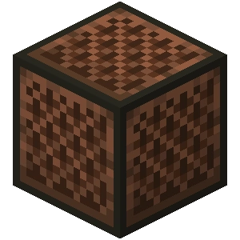
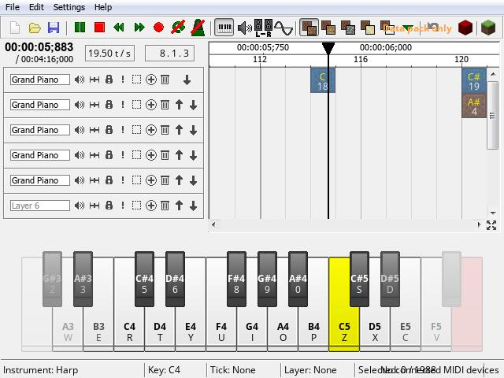
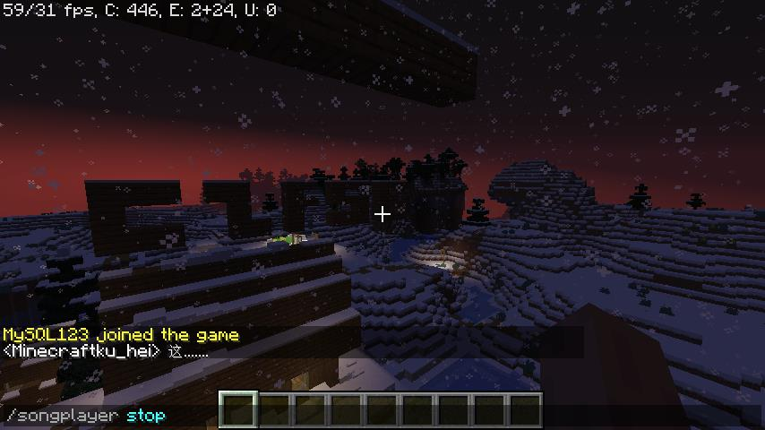
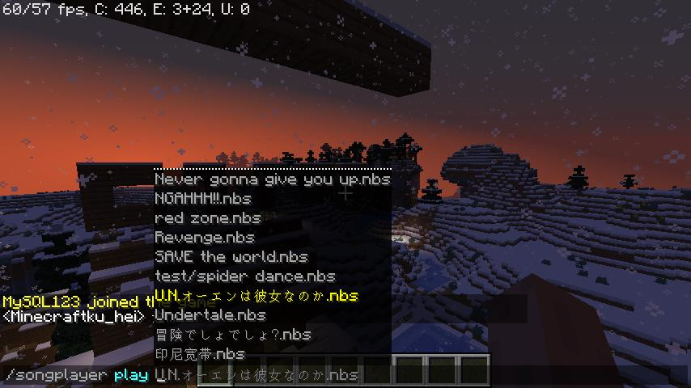

NBS player is a simple, fast and concise service plug-in of minecraft NBS red stone music player. Remote downloading of NBS files is supported. The operation of playing, stopping and importing can be realized with simple command. It can also download music and play it directly after downloading
Support minecraft 1.14 and above
Support minecraft 1.14 and above




Play music
Use the / songplayer play + NBS file command, you can directly play the existing or uploaded music in the tone of red stone music, and (part of the music) support circulation. After you play the music, nearby players can also hear it
Use the / songplayer play + NBS file command, you can directly play the existing or uploaded music in the tone of red stone music, and (part of the music) support circulation. After you play the music, nearby players can also hear it
Create your music
Use noteblock studio to create your own NBS music. You can also import MIDI files and process them slightly
stop playing
Use the / songplayer stop command to stop your playback
Use the / songplayer stop command to stop your playback
Play uploaded music
Use / songplayer play your link command to download remote music (it must be a straight link of NBS file). After downloading, you can play it directly.
Use / songplayer play your link command to download remote music (it must be a straight link of NBS file). After downloading, you can play it directly.